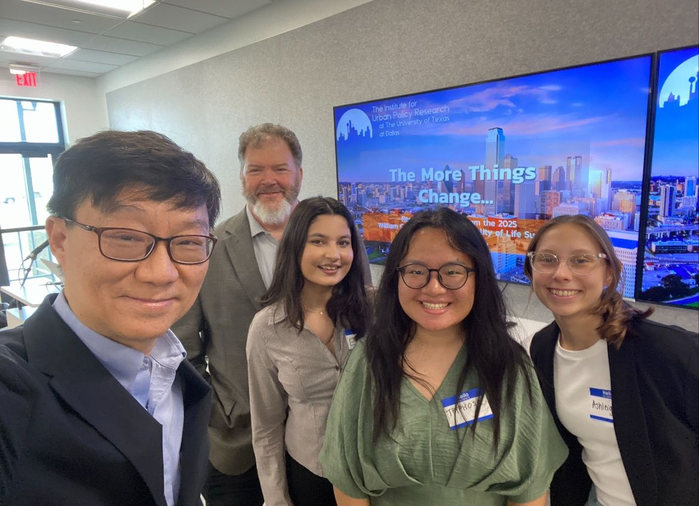

Other
This page will consist of conferences I’ve attended or other professional developments.
Conferences and Badges
October 5th - 6th 2024: Rowdy Datathon at UTSA

During this datathon, I learned more methods of data visualization using Python and pandas in python, time series and analysis and leveraging SQL with Python for data analysis.
I also learned about large language models (LLM): Interacting LLMs can be modeled with traditional population dynamics approaches. LLMs have to be used with caution due to the phenomenon of invalidation (a.k.a. hallucination). Consensus approaches can minimize (or eliminate) invalidation of information. The use of consensus can yield a potent tool for research.
Public and Non-Profit Managment Conference - April 25th - 2025
I attended the 9th Annual PNM conference in innovation in public and nonprofit management. Learning from a panel to understand technological and social innovation in human-centric workplace and cyber security events and risk.
Pathway to Professional Digital Badge Program - UTD
The Pathway to Professionalism Badge is designed to increase career readiness skills, specifically the National Association of College & Employers (NACE) Career Readiness Competencies. Career readiness skills can boost a student’s competitive advantage in the workforce, including the job search and the job retention processes. By gaining career readiness skills, students increase their confidence and ability to succeed in the world of work. Awarded on May 22, 2025.
RESULTS Fellowship Conference - July 13th-15th 2025
I had the opportunity to join emerging leading from across the country as we came together to build our advocacy skills, connect over shared goals, and prepare for a powerful day of action on Capital Hill. Together, we met with members of Congress to advocate for policies that address poverty, expand access to healthcare, and promote equity. Grateful to be a part of this movement for lasting change!
Dallas RESULTS Fundraiser - October 23rd 2025
I was honored to take part in the RESULTS Dallas Fundraiser on Thursday, October 23, where I spoke about my journey as a RESULTS Fellow. It was inspiring to hear from Tenzin Kunor, RESULTS’ Senior Associate for Global Policy, whose advocacy and lived experience as a TB survivor highlighted the real-world impact of equitable health policies. Through the Fellowship, I’ve had the opportunity to connect grassroots voices with public policy, amplify marginalized perspectives, and contribute to efforts that uplift communities around the world. During this experience, I’ve learned that: Advocacy has real power: everyday people can influence policies that address poverty and inequality. Storytelling matters: sharing lived experiences helps make policy recommendations real and compelling. Community builds strength: being part of a movement working for justice is truly life-changing. Thank you to RESULTS and RESULTS Educational Fund for this platform of possibility and to everyone who believes change isn’t just possible, but inevitable when we engage.
North Texas Quality of Life Initiative - October 24th 2025
Last Friday, our team shared our latest project update for the North Texas Quality of Life Initiative! We presented progress on the Quality of Life Dashboard 1.5, which incorporates 2024 and 2025 data to better capture changes in education, social, economic, and environmental well-being across North Texas. We also gave a sneak peek of what’s coming in version 2.0, where I’m developing a raster map of school scores to visualize educational quality and spatial patterns across the region. Learn more about this initiative at: North Texas Quality of Life Initiative

In Publications
Medicaid LTE
In Dallas Morning News: Friday May 16th, 2025.
Cuts will gut Medicaid
Re: “Congress can’t cut Medicaid without cutting services — In Texas, recipients are pregnant women, children, those with disabilities and nursing home residents,” by Fred Cerise, Monday Opinion.
At a time when millions of Americans rely on Medicaid for essential care, Congress is debating billions in cuts that could devastate access, while downplaying the consequences.
Policymakers are proposing to slash Medicaid funding under the guise of eliminating fraud. But let’s be clear: You can’t gut the funding without gutting the services.
In Texas, that means fewer doctors, less care and real harm to people already struggling. One major target is a legal funding mechanism used by almost every state: provider taxes that help unlock federal Medicaid dollars. If Congress lowers the cap on these taxes, Texas could lose nearly $5 billion in care. That’s not fraud reduction; that’s cutting care.
We need leaders who will protect our most vulnerable, not quietly dismantle the system they rely on. Call your representative today and urge them to oppose these harmful Medicaid cuts. Texans can’t afford to lose the care they depend on.
Ashleigh M. Frank, North Dallas
SNAP LTE
In Dallas Morning News: Sunday May 18th, 2025
Prioritize food policies
Re: “Texas leads nation in hunger — Rising prices for necessities outpace D-FW family budgets,” Thursday news story.
As a graduate student at the University of Texas at Dallas, I often plan my meals around the limited food I receive from the campus pantry, supported by the North Texas Food Bank. Despite working and budgeting, I can’t always afford enough food, and I know I’m not alone. According to UTD’s 2023 Your Needs Survey, 25.8% of students ate less than they should because they couldn’t afford to buy more food. But food insecurity goes beyond campus. Many families today are struggling with rising grocery costs and other essential expenses. No one should have to choose between basic needs. Hunger affects our communities, our workforce and our future. Congress has the opportunity to address this in the next Farm Bill by strengthening SNAP benefits and making them more accessible. We must prioritize policies that ensure every person, student, worker, parent or elder has reliable access to nutritious food. I urge readers to contact their congressional members to prioritize this urgent issue and protect the health and well-being of all Texans.
Ashleigh M. Frank, Dallas
Protect Healthcare LTE
In Dallas Morning News on Monday, June 30th, 2025
Protect Medicaid and hospitals
Congress should not rush to pass a massive budget reconciliation bill just to meet a political deadline. Buried in the bill are deep Medicaid cuts, more extreme than what the House proposed, that would gut funding mechanisms states rely on to serve low-income residents. This threatens the viability of rural hospitals and community health centers, especially here in Texas. Medicaid is a lifeline for millions, and slashing it to meet unrealistic budget targets is irresponsible. Even some Republicans recognize the harm this bill could do. I urge Sens. John Cornyn and Ted Cruz to vote no on the bill. Protect Medicaid, protect our hospitals and protect Texas families.
Ashleigh M. Frank, North Dallas
Voter Suppression LTE
In Dallas Morning News on Wednesday, August 6th, 2025.
This is voter suppression
Re: “House panel passes GOP redistricting plan,” Sunday Metro story.
As a Texas voter, it’s frustrating to watch our elected officials redraw the lines of power in secret, while ignoring the voices of the very people they claim to represent. During public hearings, Texans overwhelmingly spoke out against the redistricting plan, yet lawmakers passed it anyway. Some even denied seeing maps until days before the vote. This isn’t redistricting. It’s voter suppression in plain sight. The current proposal weakens minority voting strength, benefits one party and undermines the foundations of our democracy. We need transparent, accountable leadership, not political maneuvering behind closed doors. I urge Texans to contact their representatives and demand a fair and inclusive process that reflects all of us, not just the powerful few.
Ashleigh M. Frank, North Dallas
Unity LTE
In Dallas Morning News: Thursday October 2nd, 2025
Remember this truth
In times of bitter division, the Constitution and a simple song can still remind us of who we are. We are becoming a nation defined by anger and partisanship, drifting away from the ideals of justice, liberty and community that once united us. As de Vinck’s essay reminds us, the Constitution provides the blueprint for shared governance. The lyrics of It’s a Small World carry a profound truth: That despite differences, we live under the same sun and moon. National renewal starts with remembering these truths. Let us recommit to the principles of our Constitution and embrace the humility to listen, respect and heal together. America’s strength has always come from unity in diversity.
Ashleigh M. Frank, Dallas